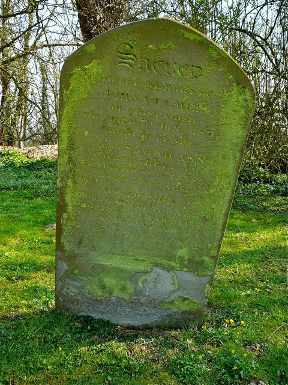
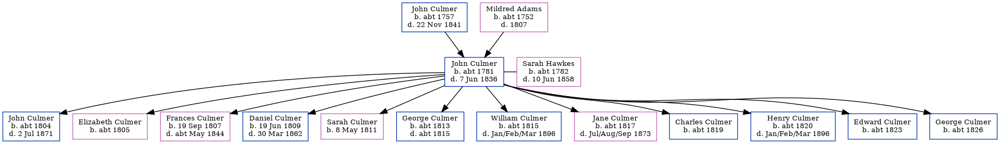

John Culmer c1781 - 1836
[ Home ] | [ Calendar ] | [ Surnames Index ] | [ Family History ]A parish clerk and laborer and the child of John Culmer (a laborer) and Mildred Adams, John Culmer, the 4 times great-grandfather of <a href="I1.html">Nigel Horne</a>, was born in Stourmouth, Kent, England <i>c.</i> 1781<span class="citation">1</span>, was baptized there on Apr 22, 1781 and married Sarah Hawkes (with whom he had 12 children: <a href="I98.html">John</a>, <a href="I594.html">Elizabeth Davison</a>, <a href="I604.html">Frances</a>, <a href="I595.html">Daniel</a>, <a href="I603.html">Sarah</a>, <a href="I602.html">George</a>, <a href="I601.html">William</a>, <a href="I596.html">Jane</a>, <a href="I600.html">Charles</a>, <a href="I599.html">Henry</a>, <a href="I598.html">Edward</a> and <a href="I597.html">George</a>) at St Nicholas, Ash, Kent, England on Jan 31, 1801<span class="citation">3</span>.<p>He died on Jun 7, 1836 in Stourmouth<span class="citation">1,2</span> and was buried there on Jun 12, 1836<span class="citation">2</span>.
Parents
- John was born c. 1757
- Mildred was born c. 1752
Children
- John was born c. 1804
- Elizabeth Davison was born c. 1805
- Frances was born on Sep 19, 1807
- Daniel was born on Jun 19, 1809
- Sarah was born on May 8, 1811
- George was born c. 1813
- William was born c. 1815
- Jane was born c. 1817
- Charles was born c. 1819
- Henry was born c. 1820
- Edward was born c. 1823
- George was born c. 1826
Citations
- Kent, England, Tyler Index to Parish Registers, 1538-1874 Online publication - Provo, UT, USA: Ancestry.com Operations, Inc., 2010. This collection was indexed by Ancestry World Archives Project contributors.Original data - Frank Watt Tyler. The Tyler Collection. Canterbury, Kent, England: The Institute of Herald
- UK and Ireland, Find A Grave Index, 1300s-Current Ancestry.com Operations, Inc.
- Kent Marriages And Banns - Findmypast
Media
john and daniel culmer - sally hawkes - gravestone

East Kent Burial Index Transcription - GBPRS-D-407029758-1
Family Tree
Generated by Ged2Site. Last updated on Jul 20, 2025